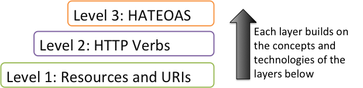
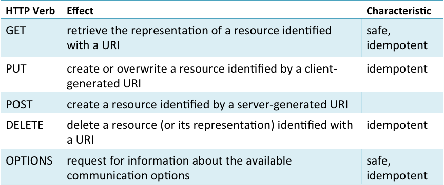
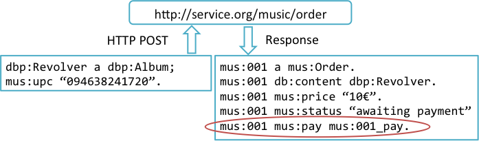

The Richardson Maturity Model provides a way of thinking about the main elements that make up a REST architecture. The model is divided into a number of layers, each layer being a precondition of the one above. All of these layers can be seen as a necessary requirement of a REST architecture. Starting from the lowest level, we have resources and their URIs. For example, as we saw above, The Beatles resource is identified by the URI http://dbpedia.org/resource/The_Beatles. The second level is HTTP verbs. These are essentially the HTTP methods (such as GET and POST) we saw earlier. These define actions to be carried out such as sending or retrieving data. The third level is known by the acronym HATEOAS (Hypertext As The Engine Of Application State). This describes the Hypermedia controls, in other words, the higher-level functions provided by the Web API such as inspecting and modifying the music releases associated with a music artist.

Figure 40: The Richardson Maturity Model [29]
On the lower Resource level, the Web API just makes available URIs that identify resources. As we saw in the previous section, a Linked Data URI may direct the client to alternative representations of that resource in, for example, Turtle or RDF/XML. On the second level, the HTTP verbs are methods that can act on those resources. Different methods can be used such as GET, POST and DELETE. The METHOD option is used by a client to get information about the types of request currently available. The server responds requests with an appropriate code such as 200 (OK), 303 (see other) or 404 (not found). The methods and their associated response codes give us a standardized form of communication in terms of the HTTP protocol. This therefore defines the different types of request that a client can make and the ways in which a server can respond to those requests.
HTTP verbs can be characterised as to whether they are safe and whether they are idempotent. A verb is characterised as safe if it cannot change the resource addressed on the server. For example, GET is safe because it merely retrieves information from the resource. It does not attempt to modify the resource. A HTTP verb is characterised as idempotent if the effect of sending one request is identical to sending multiple identical requests. The method DELETE is idempotent. Sending a single request to DELETE a resource will remove it form the server. Sending the DELETE request multiple times results in the same state. The resource stays deleted no matter how many times the request is sent. The only difference when sending multiple DELETE requests is that once the resource has ben deleted the server will respond with the code 404 (not found) rather than 200 (OK) as the resource is no longer available for deletion.

Figure 41: HTTP verbs
On the third level, HATEAOS describes how we use resources to drive the application through a series of dynamic states. For example, a client may send an order for a music album to a Web API. In this case the request will need to identify the album to be purchased, such as Revolver by The Beatles. The Web API creates a new resource to identify the order and sends a response to the client. The response indicates the resource identifying the order and the options available to the client. In this case, the server indicates that the order is awaiting payment and the price to be paid. The client could then respond by sending payment details such as a credit card number of the resource created for the order. If payment was accepted, then the Web API may trigger a physical shipment of the album or send the customer details of where a digital copy of the music can be accessed.

Figure 42: Transitions through states in a music ordering process.